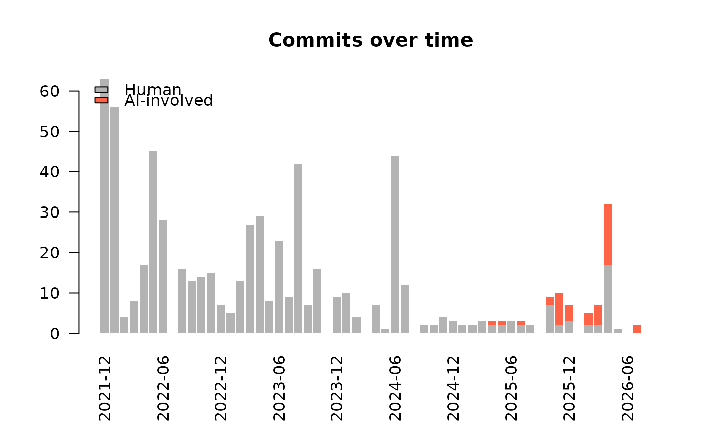
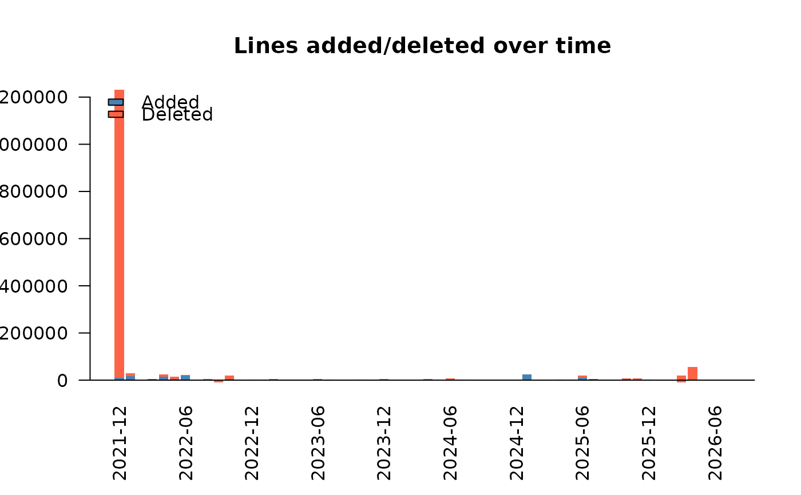

Visualizes the activity of a project over time in one of two ways: number
of commits (by = "commits") or lines added/deleted (by = "lines").
When the input has been through ai_classify(), commit bars are split into
human and AI contributions.
Arguments
- x
A
data.frame/data.tablewith adatecolumn (POSIXct), typically the output ofgh_commits(),gh_commit_lines(), orai_classify(). Forby = "lines", columnsadditionsanddeletionsare required (seegh_commit_lines()).- by
Either
"commits"(default) or"lines".- interval
Time bin:
"month"(default),"week", or"day".- main
Plot title. A sensible default is used when
NULL.- col
Bar colors. Defaults: gray/red (human/AI) for commits, blue/red (added/deleted) for lines.
- legend_pos
Position of the legend (see
graphics::legend()), orNULLto suppress it.- las
Orientation of axis labels (see
graphics::par()).- ...
Further arguments passed to
graphics::barplot().
See also
Other analysis:
ai_classify(),
ai_patterns(),
loc_evolution()
Examples
data(epiworld_commits)
epiworld_commits |>
ai_classify() |>
plot_timeline(by = "commits")

epiworld_commits |>
plot_timeline(by = "lines")
